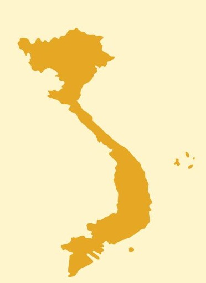
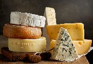
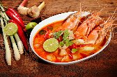

Discuss to Create a
Street Food Showdown Challenge
Thảo luận để tạo thử thách ẩm thực đường phố
You and your friends are hosting a Street Food Showdown Challenge to determine the ultimate favorite street foods between Vietnam and the United States. As part of the organizing team, you research, gather data, and create engaging content to promote the event on social media.
Navigate sections using the left sidebar. Type answers directly into the input fields. Activities marked 💬 are for discussion — write your ideas in the text areas. Use Check Answers for exercises with fixed answers.
| # | Kiểu nhà hàng | Ưu điểm | Nhược điểm |
|---|---|---|---|
| 1 | |||
| 2 | |||
| 3 | |||
| 4 |
💡 Ideas
| Cặp số 1 | Cặp số 2 | |
|---|---|---|
| Ưu điểm của các kiểu nhà hàng | ||
| Nhược điểm của các kiểu nhà hàng |
| # | Tên món ăn | Thành phần của món ăn |
|---|---|---|
| 1 | ||
| 2 | ||
| 3 | ||
| 4 | ||
| 5 |

| # | Thành phố | Món ăn đường phố nổi tiếng |
|---|---|---|
| 1 | ||
| 2 | ||
| 3 | ||
| 4 | ||
| 5 | ||
| 6 |
💡 Suggested answers (not limited to these)
| Thành phố | Món ăn đường phố |
|---|---|
| Hà Nội | Phở, Bún chả, Bánh cuốn, Nem chua rán, Bánh rán, cà phê trứng |
| Sài Gòn | Bánh mì, Hủ tiếu, Cơm tấm, Bánh tráng trộn, gỏi cuốn |
| Hội An | Cao lầu, Bánh bao, Bánh vạc, Mì Quảng |
| Huế | Bún bò Huế, Bánh bèo, Cơm hến, chè |
| Hải Phòng | Bánh đa cua, Nem cua bể, Bún cá |
| Nha Trang | Bún cá sứa, Nem nướng Ninh Hòa, Bánh căn |
| Phú Quốc | Bún quậy, Gỏi cá trích, bánh canh cá thu |
| New York City | Hot dogs, pretzels, pizza slices |
| Los Angeles | Tacos, bacon-wrapped hot dogs, Kogi tacos |
| New Orleans | Po' boy sandwiches, beignets (deep-fried pastries with powdered sugar), jambalaya (spicy rice dish) |
| San Francisco | Sourdough bread bowls (with clam chowder), Mission burritos (large burritos with rice and beans), Crab Louie salad (with Dungeness crab) |
| Miami | Cuban sandwiches (with roasted pork and ham), arepas (cornmeal cakes with cheese or meats), stone crabs (fresh crab claws) |
| Philadelphia | Cheesesteaks (beef and cheese sandwiches), soft pretzels (large and salty), roast pork sandwiches (with provolone and broccoli rabe) |
| Seattle | Piroshky (Russian pastries), seafood chowder (with Pacific Northwest seafood), phở (Vietnamese noodle soup) |
You and your friends are hosting a Street Food Showdown Challenge to determine the ultimate favorite street foods between Vietnam and the United States. As part of the organizing team, your role is to conduct research, gather data, and create engaging content for the event's promotion on social media platforms.
| Quốc gia | Tên món ăn | Nguyên liệu | Cách chế biến | Lý do lựa chọn |
|---|---|---|---|---|
| Việt Nam | ||||
| Việt Nam | ||||
| Việt Nam | ||||
| Việt Nam | ||||
| Việt Nam | ||||
| Mỹ | ||||
| Mỹ | ||||
| Mỹ | ||||
| Mỹ | ||||
| Mỹ |
💡 Teachers may replace the locations to suit their class.
🔗 Quizizz
Upload your work to your coursework page or Padlet.
| Tiêu chí | Điểm (0–10) |
|---|---|
| Creativity | |
| Engagement | |
| Educational Value | |
| Clarity and Organization | |
| Audience Interaction |
If the embed does not load, watch the video on YouTube.
💡 Answer key — countries in the video
Not in the video: Hàn Quốc · Cuba · Singapore · Đức · Ai Cập
Also available as an H5P activity.
| Nước nên thêm vào | Lý do | Món ăn nổi tiếng |
|---|---|---|
| Nước nên bỏ ra | Lý do | Món ăn nổi tiếng |
|---|---|---|
Thử (v): to try
Verb + thử: to try (doing)
Verb + thử xem: try to do something (and see)
Tôi chưa bao giờ ăn thử thịt chó.
Anh đọc thử xem có hiểu không?
Đây là bún thang. Chị ăn thử xem có ngon không?
Also available as an H5P activity.


| # | Mùi vị / Nguyên liệu | Lời khuyên với “thử” |
|---|---|---|
| 1 | ||
| 2 | ||
| 3 | ||
| 4 |
💡 Suggested answers
2. Các loại phô mai: có vị béo và mềm. Theo tôi, mỳ Ý mà không có phô mai thì sẽ rất chán.
3. Canh Tom yum Thái Lan: có tôm, mực, nấm, lá chanh, sả. Món canh này rất phổ biến trong các nhà hàng Thái Lan. Chị ăn thử xem có ngon không?
4. Bánh quy macaron: bánh mềm và không ngọt quá. Bột mì, đường, bơ và trứng. Đây là một món tráng miệng mà chị nên ăn thử khi đi thăm Paris.
Also available as an H5P activity.
| G | Goal | Create a street food map of NYC, Las Vegas, and San Francisco for Vietnamese tourists visiting the United States. |
| R | Role | You are doing a remote internship for a Vietnamese travel agency. |
| A | Audience | Vietnamese people / tourists. |
| S | Situation | The company has tasked your team with creating a food map for three renowned US cities: NYC, Las Vegas, and San Francisco. The objective is to cater to guests who are eager to explore and experience the diverse flavors of American cuisine. |
| P | Product | Food maps of 3 cities. Publish your work on the Exit Task Exhibition Padlet if you want to share it publicly. |
| S | Standard | Your food map should: map out the locations; give brief descriptions of each food spot; highlight the must-try dishes and their key ingredients; consider specific dietary preferences or restrictions guests may have and include suitable options; use appropriate grammar, vocabulary, and sentence structure. Use Padlet for this task. |
💡 Teachers may replace the cities to suit their class.
📌 Share on Exit Task PadletClick 🔊 to hear each word.